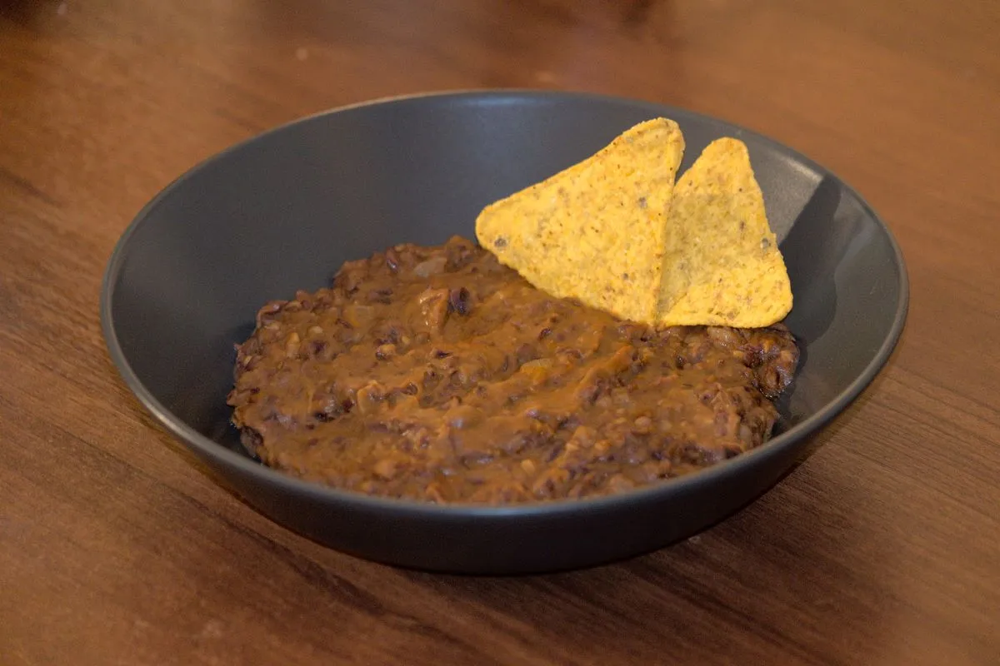

Refried Beans

One of my favorite dishes that works either as an appetizer or side dish is refried beans. A classic from Mexican cuisine, that is best eaten with some totopos, or tortilla chips.
Ingredients
As usual, the ingredients here are for about two adult portions:
- 400-500g can of pre-cooked beans
- ¼ onion
- 3-4 garlic cloves
- Cumin
- Paprika
- 2-4 spoonfuls butter
- Cooking oil (can be olive oil)
Directions
- Add the oil and the butter to the frying pan and heat to medium heat.
- Chop the onion and mince the garlic.
- Once the frying pan is heated, add the onion and garlic to the pan, and fry them for about 3 minutes.
- Add salt, cumin, and paprika to taste. Usually I add paprika until the mix is a brownish red. Mix with your spatula, and let fry for about 5 minutes.
- Open the can of beans and pour the beans into the pan. Depending on how liquid you want the refried beans to be, you can use all or just some part of the liquid inside the can. I usually get rid of some of the liquid from the can before pouring the beans.
- Mash the beans and mix. Let them fry at medium-low to medium heat for about 5 to 10 minutes, mixing from time to time.
- Serve, and enjoy with some totopos.
Originally published at https://www.yaroslavps.com/food/refried-beans/
Contribution
- Yaroslav de la Peña Smirnov – website, other website, donate